NT News
Australia
Grim discovery in apartment complex bin
A household object has somehow reached the news desk.
The latest daily picks, linked back to the original sources. Search the room, pick a source, or follow a headline out to the full story.
Record updated: 26 Sep 2026, 07:39 AM AEST
Showing 19 headline candidates from the refresh run completed on 26 Sep 2026, 07:39 AM AEST.
A household object has somehow reached the news desk.

The word chaos gives it open-mic energy.

The scale is doing deadpan comedy.

A very ordinary object has wandered into serious news.

A wonderfully specific detail has taken centre stage.

The headline is already trying not to laugh.
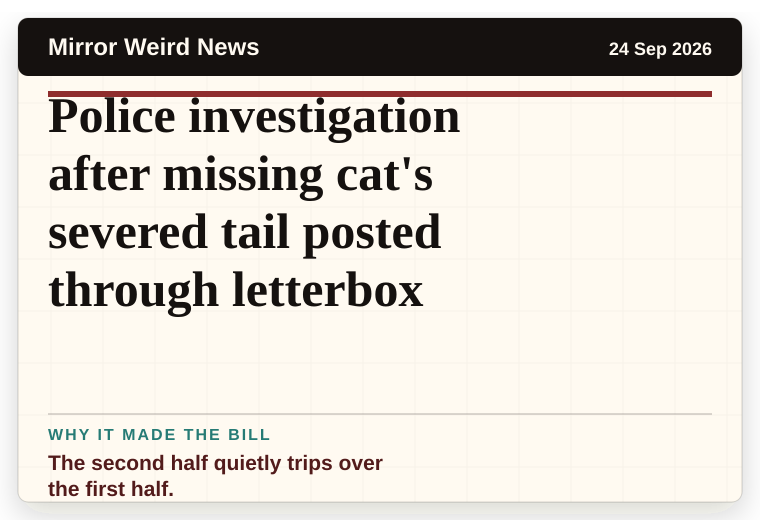
The second half quietly trips over the first half.

A household object has somehow reached the news desk.

A mystery is doing a lot of work in a very small sentence.
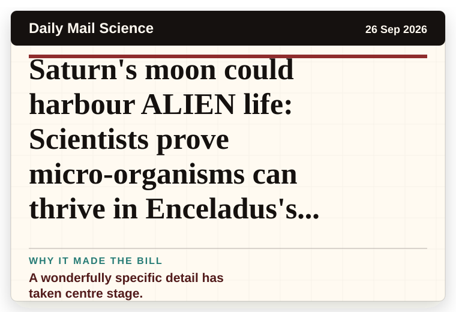
A wonderfully specific detail has taken centre stage.
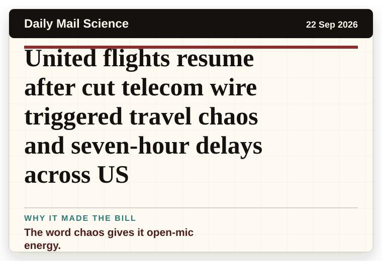
The word chaos gives it open-mic energy.
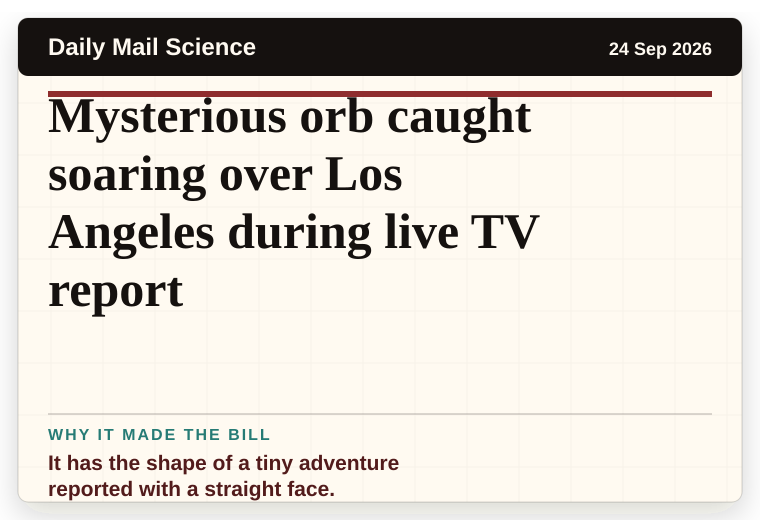
It has the shape of a tiny adventure reported with a straight face.
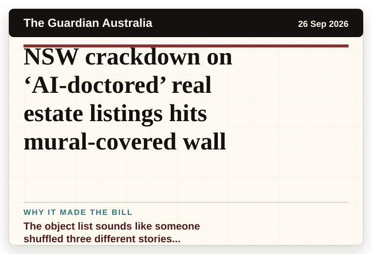
The object list sounds like someone shuffled three different stories together.
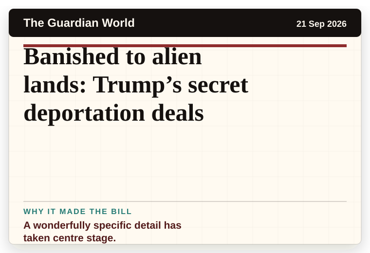
A wonderfully specific detail has taken centre stage.
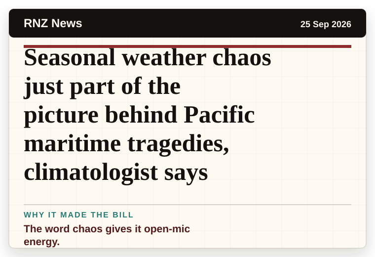
The word chaos gives it open-mic energy.
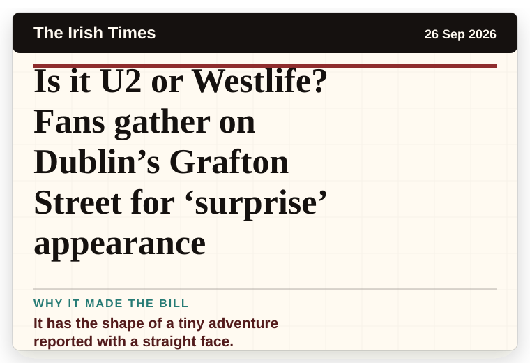
It has the shape of a tiny adventure reported with a straight face.
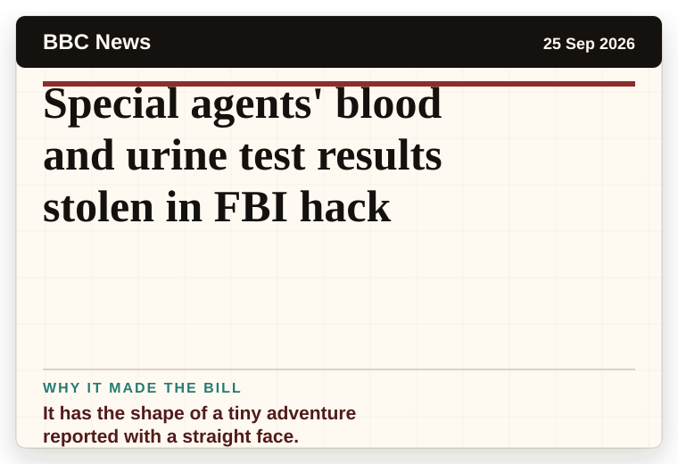
It has the shape of a tiny adventure reported with a straight face.
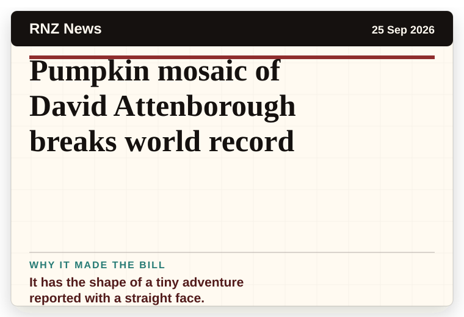
It has the shape of a tiny adventure reported with a straight face.
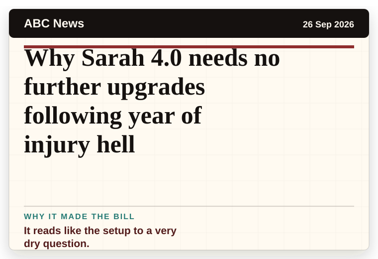
It reads like the setup to a very dry question.